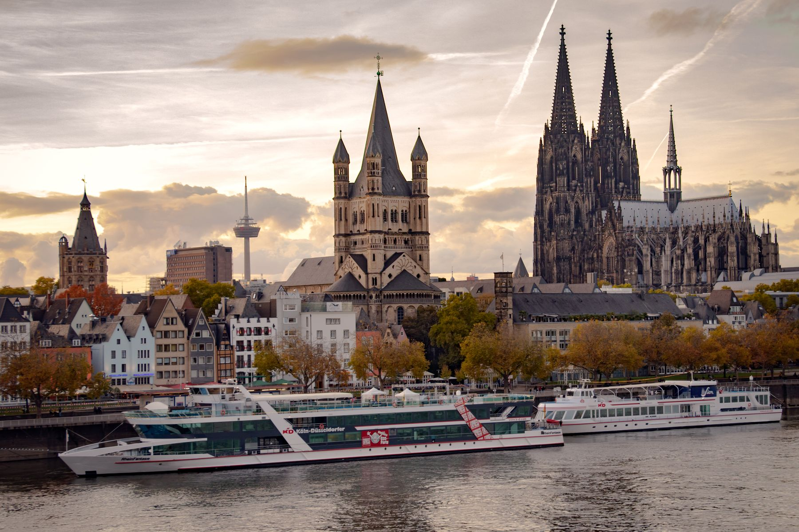

Projektmanagement im Rheinland, vor Ort bei Ihnen
Projektmanagement im Rheinland mit echter Präsenz — externe Projektleitung und Programm-Steuerung vor Ort in Köln, Bonn, Düsseldorf und Aachen, mit kurzen Wegen. Klassisch, agil oder hybrid, für Vorhaben in Organisationen jeder Größe.
Ein kurzer Überblick reicht. Wir melden uns werktags innerhalb von 24 Stunden.
Projektsteuerung entscheidet sich vor Ort, im selben Raum
Wenn ein Vorhaben kippt, zählt, wer in zwei Stunden am Tisch sitzen kann. Im Rheinland — von Köln und Bonn über Düsseldorf bis Aachen — begleiten wir Projekte mit echter Präsenz: bei der Geschäftsleitung, im Team, am Ort des Problems. Reine Remote-Steuerung greift in den Momenten zu kurz, in denen Entscheidungen schnell und gemeinsam fallen müssen. Das gilt besonders, wenn der Auftrag unscharf ist und der Umfang unbemerkt wächst, wenn der Status grün zeigt, während die Lücke zum Plan wächst, oder wenn niemand die Autorität hat, quer über Bereiche verbindlich zu liefern.

Entscheidungen brauchen Präsenz
Die schwierigen Momente eines Projekts klärt man am besten im Raum, gemeinsam am Tisch. Wer regional erreichbar ist, kann da sein, wenn es zählt — kurzfristig und persönlich.
Reisezeit frisst Steuerung
Eine Projektleitung, die quer durch die Republik anreist, ist seltener da und teurer in jeder Stunde. Im Rheinland entfällt die lange Anreise — die Zeit fließt voll in die Steuerung und bleibt dem Vorhaben erhalten.
Mehrere Standorte in der Region
Viele Vorhaben betreffen gleich mehrere Standorte quer durch die Region. Eine Steuerung in der Region pendelt zwischen ihnen und ist an jedem Ort präsent.
Verfügbarkeit, wenn es eskaliert
Wenn ein Termin wackelt, zählt ein Termin noch in derselben Woche. Regionale Nähe heißt: kurzfristig vor Ort, bevor aus einem Problem ein Schaden wird.
Wir steuern Ihr Projekt mit Präsenz im Rheinland
Wir liefern Erfahrung mit Verantwortung: als Interim-Projektleitung für ein kritisches Vorhaben, als externe Steuerung für ein Programm über mehrere Standorte in der Region, als Begleitung agiler Teams oder als Recovery-Team für ein entgleistes Projekt. Wir übernehmen den Steuerungsstand selbst und sind dafür regelmäßig bei Ihnen vor Ort.
Im Mandat heißt das konkret: Wir setzen den Auftrag mit der Geschäftsleitung neu auf, klären Rollen und Eskalations-Logik und etablieren einen verlässlichen Steuerungs-Rhythmus — mit festen Präsenztagen im Rheinland und hybrider Abstimmung dazwischen. Wir halten Abhängigkeiten zwischen Standorten, Teams und Dienstleistern aktuell und sind in den kritischen Phasen persönlich greifbar.
Interim-Projektleitung
Kurzfristig eine erfahrene Projektleitung für ein kritisches Vorhaben — vor Ort im Rheinland, mit Verantwortung für Termin, Budget und Qualität und sauberer Übergabe an Ihre Linie.
Programm- & Multiprojekt-Steuerung
Vorhaben über mehrere Standorte quer durch die Region — mit einer Steuerung, die zwischen den Orten pendelt und an jedem präsent ist.
Agile Begleitung & Coaching
Agile Praxis dorthin bringen, wo sie wirkt — mit Coaches, die für Workshops und kritische Phasen regelmäßig persönlich beim Team sind und über den Call hinaus präsent bleiben.
Rettung und Prüfung
Ein Vorhaben ist entgleist. Wir prüfen kompakt, definieren den Recovery-Pfad und steuern bis zur Stabilisierung — mit der Verfügbarkeit, die ein wackelnder Termin verlangt.
Vor Ort präsent vom ersten Auftakt bis zur Übergabe
Sie geben nach jeder Phase das Signal zum Weitermachen — so bleibt das Risiko klein und der Nutzen sichtbar. Wir wählen pro Phase das passende Vorgehen — klassisch, agil oder hybrid — und legen feste Präsenztage im Rheinland fest, damit Eskalationen und Richtungsentscheidungen vor Ort am Tisch geklärt werden.
Projektprüfung
Auftrag, Umfang, Stakeholder, Steuerung und Lieferpfad im Überblick — der erste Termin findet vor Ort beim Mandanten im Rheinland statt.
Steuerungs-Setup
Auftrag neu formuliert, Rollen geklärt, Steuerungs-Rhythmus mit festen Präsenztagen, Eskalations-Logik und ein verständliches Reporting.
Operative Steuerung
Wir übernehmen die Projektleitung interim — mit voller Verantwortung und regelmäßiger Präsenz, ergänzt um hybride Abstimmung dazwischen.
Mehrere Standorte
Wird aus dem Projekt ein Programm über mehrere Standorte der Region, pendelt die Steuerung zwischen ihnen und hält das Gesamtbild zusammen.
Übergabe an Ihre Linie
Saubere Übergabe an Ihre interne Leitung — mit Dokumentation, Coaching der Nachfolge und auf Wunsch einer befristeten Sparring-Phase.
Wo regionale Projektsteuerung den Unterschied macht
Eine Auswahl der Vorhaben, die wir am häufigsten in der Region begleiten. Gemeinsamer Nenner: Ein wichtiges Projekt übersteigt die interne Kapazität oder gerät ins Stocken — und es hilft, dass jemand schnell und persönlich vor Ort sein kann.
Kritisches Vorhaben übernehmen
Eine erfahrene Projektleitung springt kurzfristig ein und bringt ein wichtiges Vorhaben zurück in die Spur — vor Ort, mit voller Verantwortung.
Mehrere Standorte koordinieren
Ein Programm über mehrere Standorte der Region — zentral gesteuert, mit einer Instanz, die zwischen den Orten präsent ist.
Entgleistes Projekt stabilisieren
Termin verfehlt, Vertrauen weg: Wir prüfen kompakt, definieren den Recovery-Pfad und steuern bis zur Stabilisierung — kurzfristig erreichbar.
Bereichsübergreifende Transformation
Wenn ein Wandel mehrere Bereiche verbindet, sorgt eine präsente Steuerung dafür, dass er verbindlich geliefert wird und im Betrieb ankommt.
Steuerungsstelle aufbauen
Aufbau einer schlanken Steuerungsstelle für mehrere parallele Vorhaben — mit klarer Disziplin und regelmäßiger Präsenz im Haus.
Interne Projektleitung stärken
Begleitung und Coaching Ihrer eigenen Projektleitung — persönlich vor Ort, damit Methodik über die Folien hinaus im Alltag ankommt.
Welche Methode passt zu Ihrem Vorhaben?
Welche Methode passt, klären wir am besten gemeinsam vor Ort. Hier die Ansätze, die in der Praxis den Ton angeben — als Grundlage für eine Entscheidung, die wir zusammen treffen.
Wasserfall
Wasserfall passt zu klar planbaren Vorhaben mit festem Ziel und Termin. Phasen und Meilensteine schaffen Verbindlichkeit, die sich in gemeinsamen Vor-Ort-Terminen gut nachhalten lässt.
Scrum
Scrum passt zu Lösungen, die sich in kurzen Zyklen entwickeln — die Reviews halten wir am liebsten persönlich beim Team ab. Definiert im Scrum Guide von Scrum.org.
Kanban
Kanban macht den Arbeitsfluss sichtbar und begrenzt die Parallelarbeit — für stetige Lieferung bei gleichmäßiger Auslastung, sichtbar an einem gemeinsamen Board.
Skalierte Agilität (SAFe)
SAFe greift, wenn mehrere Teams an mehreren Standorten der Region an einem Vorhaben arbeiten. Beschrieben von Scaled Agile.
PRINCE2
PRINCE2 arbeitet prozessorientiert, mit klaren Rollen und festen Phasen-Gates — verbreitet in regulierten Häusern. Herausgegeben von PeopleCert (früher AXELOS).
PMBOK-Wissensbasis
Die Wissensbasis des Project Management Institute — eine gemeinsame Sprache für Auftrag, Risiko und Stakeholder, die die Abstimmung über Bereiche und Standorte hinweg erleichtert.
Eine Steuerung, die in der ganzen Region erreichbar ist
Die Logik bleibt überall dieselbe: Präsenz, wenn sie zählt, kurze Wege, eine Instanz, die das Gesamtbild verantwortet. Darauf bauen wir auf, ob in Köln, im Bonner und Düsseldorfer Raum, in Aachen oder im Umland — vom einzelnen Vorhaben bis zum Programm über mehrere Standorte.
Köln, Bonn & Umland
Im wirtschaftsstarken Kern der Region sind wir kurzfristig vor Ort — für Auftakt, kritische Phasen und alles, was Präsenz verlangt.
Düsseldorf & Niederrhein
Auch im Düsseldorfer Raum begleiten wir Vorhaben mit echter Nähe — mit kurzen Wegen, die die Steuerung günstig halten.
Aachen & Region
Bis in den Aachener Raum und das Umland: Wo ein Vorhaben Präsenz braucht, sind wir in kurzer Zeit am Tisch.
Was unsere regionale Steuerung von üblicher Beratung unterscheidet
Echte Präsenz im Raum
Die kritischen Momente klären wir im Raum. Regionale Nähe heißt: da sein, wenn es zählt — kurzfristig und persönlich.
Kurze Wege, mehr Steuerungszeit
Im Rheinland entfällt die lange Anreise. Die Zeit fließt voll in die Steuerung — und das macht jede Stunde wirksamer.
Wir bleiben bis es im Betrieb verlässlich läuft
Viele Berater liefern ein Konzept und ziehen ab. Wir begleiten bis in den stabilen Betrieb — bis das Vorhaben eigenständig weiterläuft.
Befähigung Ihrer Organisation
Wir arbeiten auf Ihre Eigenständigkeit hin. Wir übergeben sauber an Ihre Linie — die Übergabe ist Teil des Vorgehens.
Prinzipien, die unsere Arbeit vor Ort prägen
Gute Projektsteuerung lebt von Nähe, klaren Entscheidungen und nachvollziehbaren Ergebnissen. Wir arbeiten mit bewährten, etablierten Methoden — damit Vorhaben belastbar sind und Ihre Organisation sie weiterführen kann.
Präsenz, wenn sie zählt
Wir legen feste Präsenztage fest und sind in den kritischen Phasen persönlich greifbar — über den Kalendereintrag hinaus.
Vor Ort entschieden
Die schwierigen Punkte klären wir im Raum, am gemeinsamen Tisch. Eskalationen werden bei einem Präsenztermin entschieden und sofort geklärt.
Eine Übergabe, die bleibt
Rollen, Routinen und Dokumentation übergeben wir so, dass Ihre Linie das Vorhaben eigenständig weiterführt — aus eigener Kraft, dauerhaft.
Welche Fragen hören wir häufiger?
Wo im Rheinland ist CEx vor Ort?
Was kostet Projektmanagement-Beratung im Rheinland?
Warum überhaupt eine Beratung aus der Region?
Wie läuft der erste Termin bei uns vor Ort ab?
Klassisch, agil oder hybrid?
Begleiten Sie auch ein Programm über mehrere Standorte?
Wie schnell sind Sie vor Ort, wenn es eskaliert?
Wie lange dauert ein Mandat?
Arbeiten Sie auch mit kleineren Organisationen in der Region?
Weitere Themen zum Projektmanagement im Rheinland
Weiter zur Projektmanagement-Beratung und zu den verwandten Themen im gleichen Bereich.
Projektmanagement › wieder in den Takt bringen.
Der erste Schritt ist ein Erstgespräch von 30–45 Minuten. Wir klären Ihre Ausgangslage, die wichtigsten Engpässe und ob CEx der richtige Partner ist. Wenn nicht, verweisen wir auf jemanden, der besser passt.
Erstgespräch anfragen →Welche Fragen klären wir vor Projektbeginn?
Viele Projekte im Rheinland brauchen Nähe zu Standorten, Entscheidern und Dienstleistern. Wir prüfen, wo Präsenz vor Ort den Unterschied macht und welche Steuerung das Projekt stabilisiert.
Welche Standorte sind beteiligt?
Wir klären, wo Teams, Dienstleister und Entscheider sitzen und welche Termine Präsenz erfordern.
Wie schnell müssen Entscheidungen fallen?
Wir prüfen Lenkungskreis, Sponsor, Eskalationswege und operative Verantwortung.
Welche Methode passt zum Vorhaben?
Wir wählen klassisch, agil oder hybrid nach Liefergegenstand, Risiko und vorhandener Organisation.
Wie wird Übergabe vor Ort gesichert?
Wir planen Dokumentation, Schulung und Verantwortliche so, dass der Betrieb nach Projektende eigenständig weiterläuft.
Regionale Nähe ist dann wertvoll, wenn Entscheidungen nicht nur in Videoterminen fallen. Bei kritischen Workshops, Eskalationen, Go-lives oder Übergaben kann Präsenz vor Ort Reibung deutlich senken. Wir verbinden diese Nähe mit klarer Projektsteuerung, damit Termine, Rollen und Risiken nicht nur besprochen, sondern entschieden und nachgehalten werden. Entscheidend ist die Verbindung aus Nähe, klaren Entscheidungen und sauberer Nachverfolgung.
Prozesse, Architektur, Change.
Johannes Reusch und Hans-Helmut "Hannes" Scheel führen CEx gemeinsam. Beide begleiten Mandate mit ihrem Team persönlich. Senior- und Executive-Erfahrung für Ihr Projekt von Anfang bis Ende.


- Branchenübergreifend · vom Mittelstand bis zum Konzern
- Strukturiertes Vorgehen · nachvollziehbar und dokumentiert
- DACH-weit tätig